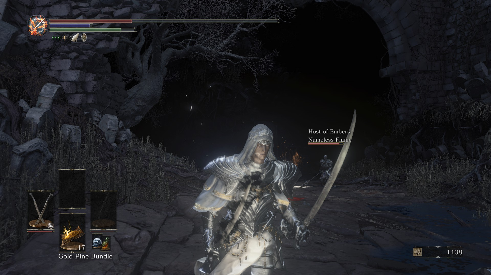
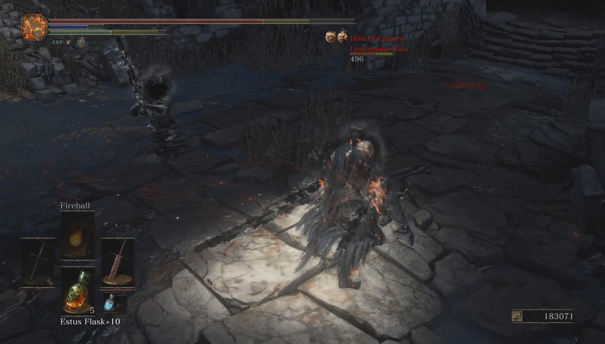
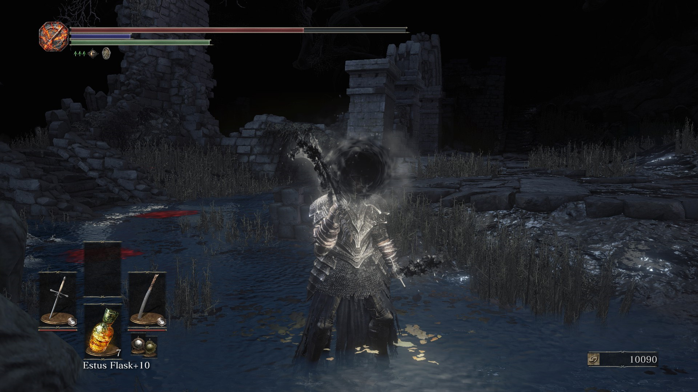
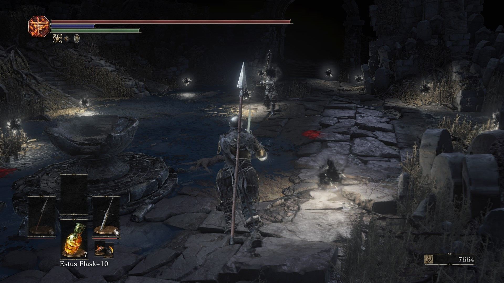

After a time of relative calm, composed of several “silent” events and Oden’s dream, March 10 came at us with all guns blazing. Despite the story extending for a while longer, this day would become the first herald of the end.
The event began with the Puppeteer sending poems #61 and #62.
The former foreshadowed the finale of the story: death of Soul of Cinders. The first mention of the Father’s ambition was many weeks ago, in #8, but this poem is the first one to use the name “Great Old Sin”. This name would become very important during the final event of the game. Also, the “one who rides to war” against Great Old Sin is almost certainly referring to the final puppet we would face during said event.
The latter poem is informative, giving us a heads-up about the real event starting in six hours (2/8 of a day, though the Puppeteer had misspelled “eighths”). Also, a curious point: ‘Show’, ‘an act’, ‘actors’ all invoke the idea of a theater show, which is fitting for the name “Puppeteer”.
As expected, exactly 6 hours later poem #63 announced the beginning of this tragic event.
Nameless Flame”s existence has been grisly from the beginning. Birthed from the two unwilling souls forced together into one corpse, its short-lived outburst of rage as Wraithflame Erik was quickly crushed, leaving behind naught but a hollow husk. The Father was hardly concerned with the emotions of his puppets. The thing he was after was much more basic, more fundamental, more primal. This “thing” has been the reason father made Redflame Erik and Lone Darkwraith into his puppets, this is the reason for Nameless Flame’s existence altogether. This “thing” is Humanity.
This black sprite is called humanity, but little is known about its true nature.
If the soul is the source of all life, then what distinguishes the humanity we hold within ourselves?
- Humanity (DS1)
Erik and the Darkwraith are presumably undead, meaning that there is some humanity in them. But it seems the Father was unable to extract it “as is”—perhaps there wasn’t enough of it, or he simply did not possess the tools or skills needed to do that. So, he went a different way—stitching two poor puppets together and stripping them of all things unnecessary. By such process, nothing but Humanity was left to grow and prosper, until the time was right.
Erik was a pyromancer, Darkwraith used gear of Ringed Knights. This affinity to fire persisted through the stitching and subsequent “refinement”. It not only persisted, but evolved. As the personalities within were stripped away, the Humanity took control—as a result, Nameless Flame uses predominantly blackflame.
Be it sorcery or pyromancy, all techniques that infringe on humanity lead to the same place. That is to say, they all seek a will of their own.
- Black Serpent (DS3)
As signified by #64 and #65, maturing of the Humanity has brought a change to the Nameless Flame. The puppet was “alive” by virtue of being possessed with Humanity, which was capable of feeling primal emotions. Nameless Flame was aware of its inevitable fate, and the Humanity feared perishing. Found within Untended Graves, it became a stalking hunter, ambushing all those who came to its world.
They will feels envy, or perhaps love, and despite the inevitable trite and tragic ending, they will sees no alternative, and is driven madly towards its target.
- Pursuers (DS1)
Sadly, we lost a lot of footage recorded during this event. The only surviving clips is that of Ragg fighting the Flame somewhere near the beginning:
As we kept trying to invade the Nameless Flame, the Father began pondering on the fate of the poor being. In #66, he deemed growing of Humanity to be a goal worthy of sacrificing two living beings. Why would he need the Humanity to such an extent though? As we have seen (and will continue until the very end), the Father is an artisan. Yet not one who works on arms or trinkets. The Father’s craft is working with living creatures—repairing them, stitching them together, and giving birth to artificial lives. Such a craft would require resources, and we’ve provided them to the Father in the past. This time was no different—the craftsman was collecting materials for his biggest, most important craft.
As the inescapable moment grew closer, Nameless Flame’s armor began giving in. He, in a fashion similar to Broken Vagrant, started to break. #67 urged us to keep going, to show no pity to this thing until we retrieved the black flame of Humanity from it.
Upon breaking down even further, Nameless Flame began “leaking” onto its opponents. Those damaged by it had their weapons forcefully buffed with blackflame, and later even acquired the humanity heads:
  Nearing the end of its life, the puppet leaked blackflame not only onto us, but into the surroundings as well, in form of small black fire orbs. Father described them as “cold as ice” in #68. The poem also suggested that the Humanity “overflows from greatest kings”. The intended meaning of this is unclear, perhaps it’s referring to Father having a high opinion of kings of Men from Dark Souls 2?
#69 reiterates the goal set by the Father in #8 and #61. At the time we did not understand the meaning of these poems clearly, but in hindsight they are written in clear text. The Father himself says: “My goal is clear—undo the Sin”.
Why exactly would he desire to overthrow the Great Old Sin (Soul of Cinders)? The obvious reason would be to gain its power. Yet, as we would learn at the very end of the story, this was not the case for the Puppeteer. This meticulously calculated plan was his way of undoing the damage the Age of Fire has brought upon the world, and setting the world towards the right path, as per the Father’s own judgment.
Nameless Flame could not sustain the continuous damage, and eventually gave up and collapsed, leaving behind the Humanity we all sought to obtain. Poem #70 signified the end of the event, completely eliminated Nameless Flame, and “sealed Great Old Sin’s fate”. The Humanity was also the first of several items we would physically “receive” in the form of images:
Thus concluded the story of the Nameless Flame. Two unknown humans, caught in Father’s cruel strings, became a seedbed for growing something that would become paramount for this grand plan we all were a part of.